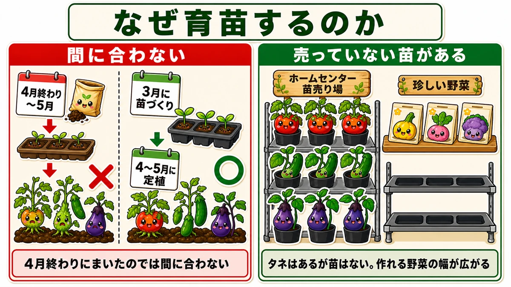
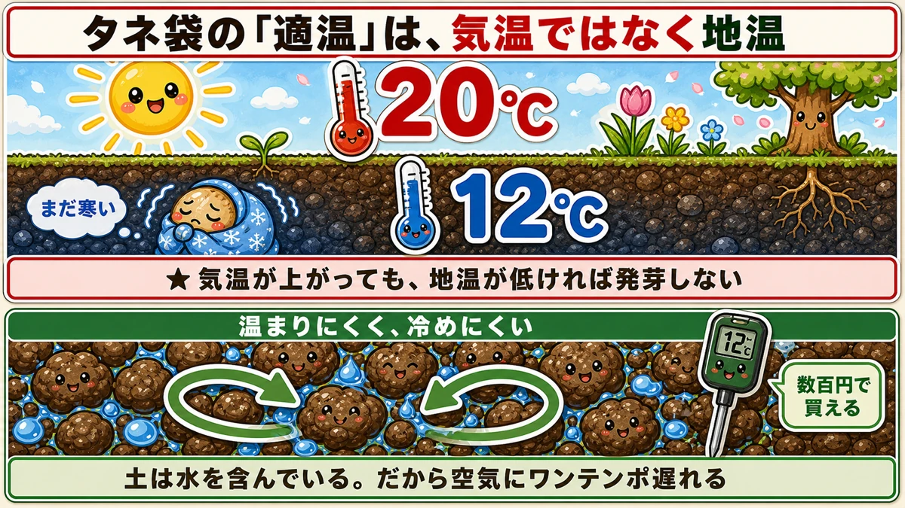
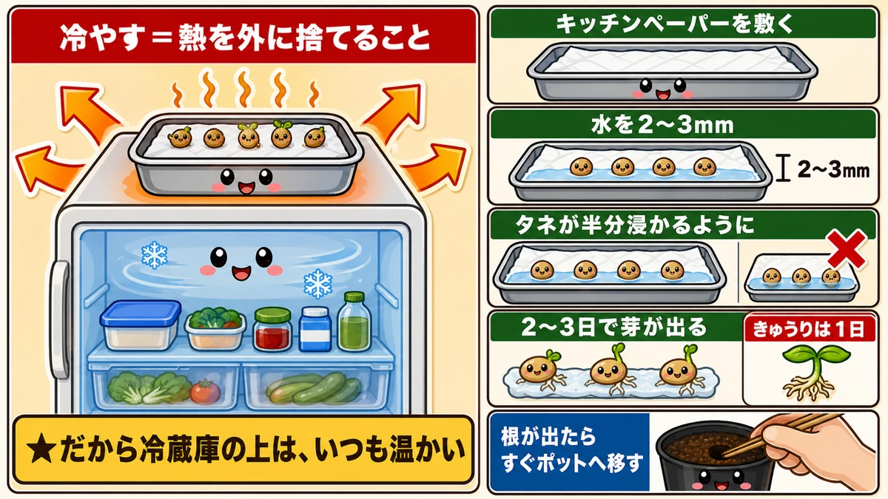
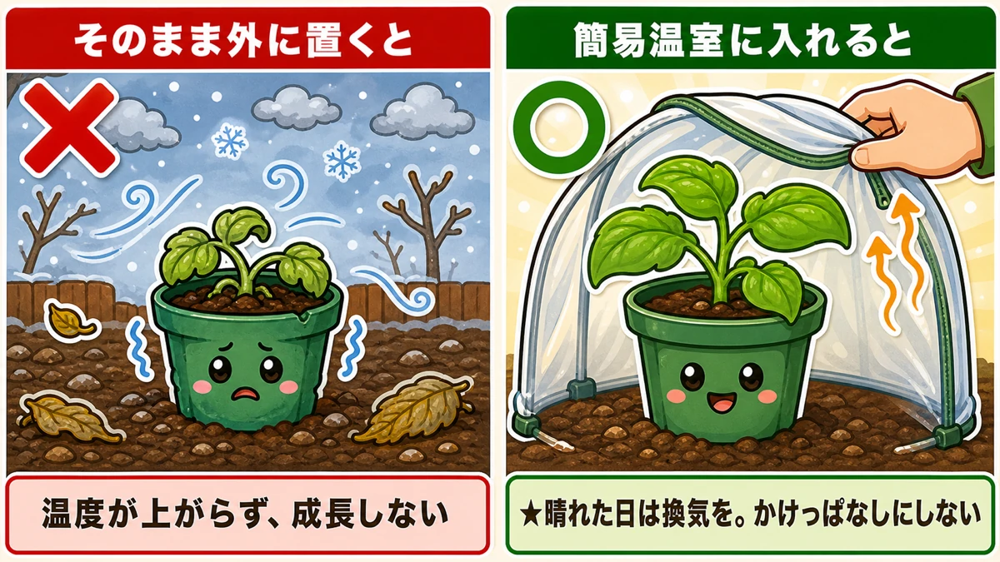
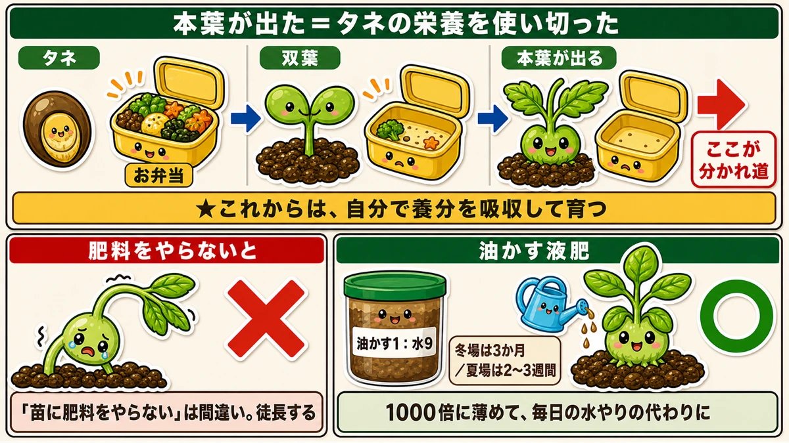
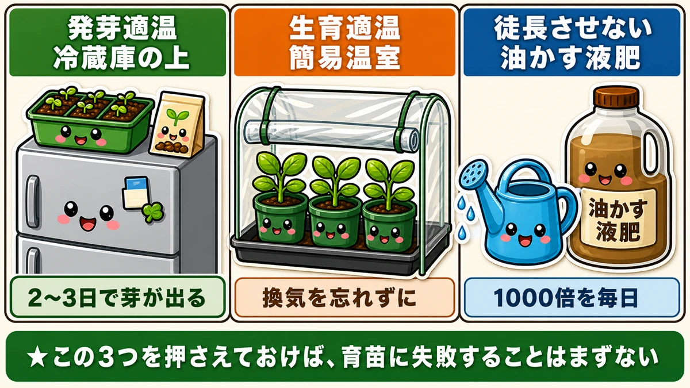

苗づくりのコツは3つだけ🌱 冷蔵庫の上から始まります

🗨️「苗はホームセンターで買うものでしょう？」
🗨️「タネから育てたら、ひょろひょろになった」
🗨️「暖かくなってきたのに、芽が出ない」
どうも、8150（えいこう）です🌱 家庭菜園歴8年、理科の教員免許を持っていて、有機・無農薬で野菜を育てています。
今回は、苗のつくり方の話です。
先に、この記事でいちばん言いたいことを言っておきますね。
苗づくりのコツは、3つだけです。
たった3つ。それも、特別な道具は要りません。1つ目にいたっては、冷蔵庫の上に置くだけです。
そしてもうひとつ、最初にお伝えしておきたいことがあります。
★タネ袋に書いてある「適温」は、気温ではありません。
ここを勘違いしていると、何をやってもうまくいきません。まずはそこからお話しします☺️
📖 この記事の目次
なぜ、苗を自分で作るのか

春夏野菜の植え付けは、4月から5月です。
でも、★苗づくりは3月から始めないと間に合いません。
★4月の終わりや5月にタネをまいたのでは、収穫までうまくいかないんですね。
買えばいいのでは、という話
もっともです。★4月中旬になれば、ホームセンターに苗が並びます。
普通のトマトやきゅうりなら、買ったほうが早いし確実です。私も買うことがあります。
でも、こういうときに困ります。
★珍しい野菜や、少し変わったものを作ってみたいとき。苗が売られていません。
タネならある。でも苗はない。そういう野菜は、けっこう多いんです。
★タネからしか作れないものを作りたいなら、育苗の技術が要る。
逆にいえば、この技術があると、作れる野菜の幅が一気に広がります。
★★大前提：「適温」は気温ではなく、地温です

ここが今回いちばん大事なところです。
タネ袋の裏を見ると、★発芽適温と★生育適温が書いてあります。「25〜30℃」のように。
多くの方は、これを気温だと思っています。私もそうでした。
でも違います。
★この適温は、気温ではなく地面の温度。つまり地温です。
だから、こういうことが起きます
★いくら気温が上がっていても、地面の温度が低ければ、発芽しません。
春先に「暖かくなってきたのに、まだ芽が出ないな」と思うことはありませんか。
あれは、★土が追いついていないんです。
なぜ土は遅れるのか
理由があります。★土は水を含んでいるからです。
水は温まりにくく、冷めにくい性質があります。だから土は、空気の温度変化にワンテンポ遅れる。
★昼に空気が20℃になっても、土はまだ12℃ということが普通に起きます。
だから、温度計を1本
★簡単な温度計を用意して、地温を管理してください。
土に挿すタイプのものが、数百円で買えます。これがあるかないかで、判断がまるで変わります。
「暖かいから、そろそろかな」ではなく、「地温が18℃になったから、まける」。この差は大きいです。
★コツ①：発芽させる ー 冷蔵庫の上

ここから3つのコツです。まず、発芽適温をどう保つか。
答えは拍子抜けするほど簡単です。
★冷蔵庫の上に置いてください。
なぜ冷蔵庫の上なのか
面白い話です。
★冷蔵庫は1年中ものを冷やしていますが、その熱を外に捨てています。
冷やすというのは、熱を消すことではなく、移動させることなんですね。中から取り出した熱を、背面や上面から放出している。
★だから冷蔵庫の上は、いつも温かい。
しかも1年中、安定しています。これ以上ない発芽装置が、台所にあったわけです。
やり方
用意するのは、プラスチックのトレー、キッチンペーパー、水、そしてタネです。
- ★トレーにキッチンペーパーを敷く
- ★水を2〜3mmの高さまで入れる
- ★タネを並べる。タネが半分くらい水に浸かるように
- ★冷蔵庫の上に置く
★タネが水に溺れないよう、水の量を調整してください。半分浸かるくらいがちょうどいいです。
どれくらいで芽が出るか
★2〜3日で芽が出ます。
野菜によって差があります。★きゅうりは1日で根が出ました。ナスはもう少しかかります。
★根が出たら、すぐにポットへ移してください。
割り箸などで穴を開けて、★根を傷つけないように移植します。倒れたりしても、あまり気にしなくて大丈夫です。
水分を与えたら、育苗の準備は完了です。
この方法の良さ
★まいたのに芽が出ない、という不安がなくなります。
土にまくと、芽が出るまで中が見えません。「腐ったのかな」「深すぎたかな」とやきもきする。
でもこの方法なら、★目の前で芽が出るのが見えます。出たものだけをポットに移すので、無駄がありません。
コツ②：生育適温を保つ ー 簡易温室

芽が出て、ポットに移した。次はここからです。
★ポットをそのまま外に置いても、温度が上がらず成長しません。
3月の外は、まだ寒いですからね。
やり方
★移動できる簡易温室のカバーをかぶせます。
ビニール製の、棚に被せるタイプのものです。ホームセンターで手に入ります。
★これで必要な育苗温度に、かなり近づけられます。
換気を忘れずに
★換気が必要なときは、持ち上げてください。
晴れた日は中の温度が上がりすぎます。これは畑のトンネルと同じですね。
かけっぱなしにしないこと。これだけ気をつけてください。
★★コツ③：徒長させない ー 油かす液肥

3つ目が、いちばん奥が深いところです。
徒長（とちょう）というのは、★ひょろひょろと細長く伸びてしまうこと。
苗づくりで失敗するとき、たいていこれです。せっかく芽が出たのに、頼りない苗になってしまう。
★本葉が出た日が、分かれ道です
ここを知っておいてください。
★本葉が出始めるということは、タネの栄養を、双葉が全部使い切ったということです。
タネの中には、赤ちゃんのお弁当が入っています。双葉はそれを食べて出てきた。
そして本葉が出るころ、そのお弁当は空になっています。
★これからは、苗自身が地中から養分を吸収して育っていかなければなりません。
いわば、旅立ちの始まりです。
★「苗に肥料をやらない」は、間違いです
よく「苗のうちは肥料をやらないほうがいい」と言われます。
でも、★肥料が全くないと、ひょろひょろの徒長した苗になります。
お弁当が空になったのに、次の食事が用意されていない。だから苗は必死に、光を求めて背だけを伸ばす。それが徒長の正体です。
油かす液肥の作り方
そこで使うのが、油かすの液肥です。自分で作れます。
★油かす1に対して、水9を入れて発酵させる。
発酵にかかる時間は、こうです。
- ★冬場は3か月
- ★夏場は2〜3週間
つまり、★春に使いたいなら、冬のうちに仕込んでおく必要があります。
1月に仕込めば、ちょうど春に間に合います。冬の手あきに、やっておくといい作業ですね。
使い方
★約1000倍に希釈して、毎日の水やりの水の代わりに与えます。
薄めるのは、濃いと根を傷めるからです。毎日少しずつ、が基本ですね。
★これで徒長しない、しっかりした苗が育ちます。
完成の目安
★この作業を1か月ほど続けると、本葉が3〜4枚のしっかりした苗になります。
そこが定植（畑に植えること）のタイミング。★4月終わりから5月の植え付けを目指してください。
3つの答え、まとめておきます

- ★発芽適温をどう保つか → 冷蔵庫の上
- ★生育適温をどう保つか → 簡易温室
- ★徒長させないためには → 油かす液肥（1000倍）
これだけです。
★この3つを押さえておけば、育苗に失敗することはまずありません。
道具も、冷蔵庫と簡易温室と油かす。特別なものは何もないんですよね。
学ぶ：なぜ、ひょろひょろに伸びるのか🔬
理科の時間です。徒長のしくみを、もう少し詳しく見てみます。
徒長する原因は、2つあります。
- ★光が足りない
- ★養分が足りない
光が足りないと、上を目指します
植物には、光を探す力があります。
★光が足りないと、「もっと上に行けば光があるはずだ」と判断します。
そして、茎を伸ばします。太くなるより先に、まず高くなろうとする。
★その結果、細くて頼りない、倒れやすい苗になる。
窓辺で育てた豆苗が、部屋の奥にあるものよりひょろ長くなるのを見たことはありませんか。あれと同じです。
養分が足りないと、細くなります
茎を太くするには、材料が要ります。
★お弁当が空になったのに次の食事がないと、太くする材料がない。
だから伸びるだけ伸びて、中身が伴わない。
★本葉が出るころがいちばん徒長しやすいのは、ちょうどお弁当が切れるタイミングだからなんですね。
「油かす液肥を毎日」というのは、★このタイミングで食事を切らさないための工夫です。
土が遅れる、という話をもう一度
冒頭の「地温」の話も、同じ物理です。
★水は、温まりにくく冷めにくい。専門的には「比熱が大きい」といいます。
海の近くが夏涼しくて冬暖かいのも、水のこの性質のせいです。
土は水を含んでいるので、同じことが起きます。★空気がどれだけ暖まっても、土はゆっくりしか追いつかない。
★だからタネ袋の適温は「地温」で書かれている。タネがいる場所の温度でなければ、意味がないからです。
お子さんと一緒なら
2つ、おすすめの実験があります。
★①同じタネを「冷蔵庫の上」と「部屋の隅」に置いて、発芽までの日数を比べる。
数日の差が、はっきり出ます。「冷やす機械の上が温かい」という不思議も、そこで話せます。
★②同じ苗を「日の当たる場所」と「暗い場所」で育てて、背比べをする。
暗いほうが背が高くなります。★でも触ってみると、細くて頼りない。
「大きいこと」と「丈夫なこと」は違う。畑でも人でも同じかもしれませんね😊
まとめ
ここまで読んでくださって、ありがとうございます！
苗づくりは、思っているより単純です。ポイントを整理しておきますね。
- ★★タネ袋の「適温」は気温ではなく地温。土は水を含むので、空気より遅れて温まる
- ★発芽させるなら冷蔵庫の上。キッチンペーパーに水2〜3mm、タネが半分浸かるように
- ★根が出たらすぐポットへ。割り箸で穴を開けて、根を傷つけないように
- ★生育適温は簡易温室で。晴れた日は換気を忘れずに
- ★★本葉が出た日が分かれ道。タネのお弁当が空になるタイミング
- ★「苗に肥料をやらない」は間違い。養分がないと徒長する
- ★油かす1：水9で発酵。冬場は3か月かかるので、1月に仕込む。1000倍に薄めて毎日
全部やろうとしなくて大丈夫です。まずは冷蔵庫の上に、キッチンペーパーとタネを置いてみてください。2〜3日で芽が出ます。そこから全部が始まります🌱
簡易温室（ビニールカバー付き）
発芽したあと、そのまま外に置くと育ちません。3月の外気では、生育適温に届かないからです。棚ごとビニールで包むタイプなら、置くだけで日中の温度が上がります。カバーは春が終わったら外して、普通の棚として使えます。
![[商品価格に関しましては、リンクが作成された時点と現時点で情報が変更されている場合がございます。]](https://hbb.afl.rakuten.co.jp/hgb/56e737da.59472026.56e737db.311c7b4f/?me_id=1280948&item_id=10022268&pc=https%3A%2F%2Fthumbnail.image.rakuten.co.jp%2F%400_mall%2Fweiwei%2Fcabinet%2Fshouhin-image03%2Faah004-r.jpg%3F_ex%3D240x240&s=240x240&t=picttext "[商品価格に関しましては、リンクが作成された時点と現時点で情報が変更されている場合がございます。]")

油かす
徒長させない鍵がこれです。本葉が出たら、油かす1に対して水9で薄めた液肥を与えます。化成肥料と違って効き方がゆるやかなので、一気に伸びて間のびすることがありません。臭わないタイプなら、室内で作業しても平気です。
![[商品価格に関しましては、リンクが作成された時点と現時点で情報が変更されている場合がございます。]](https://hbb.afl.rakuten.co.jp/hgb/55e75fe5.20db4cd1.55e75fe7.d1ec32cc/?me_id=1194164&item_id=10000908&pc=https%3A%2F%2Fthumbnail.image.rakuten.co.jp%2F%400_mall%2Fgardening%2Fcabinet%2Fhiryousennyouhiryo%2Fomakase-1.jpg%3F_ex%3D240x240&s=240x240&t=picttext "[商品価格に関しましては、リンクが作成された時点と現時点で情報が変更されている場合がございます。]")
プラグトレー128穴
1穴が小さいぶん、置き場所を取りません。冷蔵庫の上という限られた場所で発芽させるなら、これくらいの大きさがちょうどいい。本葉が3〜4枚になったらポットへ移します。
![[商品価格に関しましては、リンクが作成された時点と現時点で情報が変更されている場合がございます。]](https://hbb.afl.rakuten.co.jp/hgb/56d221a0.da732c49.56d221a1.b57a6709/?me_id=1230952&item_id=10006155&pc=https%3A%2F%2Fthumbnail.image.rakuten.co.jp%2F%400_mall%2Fnou-nou%2Fcabinet%2Fnousi2%2F0108007400004.jpg%3F_ex%3D240x240&s=240x240&t=picttext "[商品価格に関しましては、リンクが作成された時点と現時点で情報が変更されている場合がございます。]")
土壌温度計
タネ袋の適温は気温ではなく地温です。ここを見誤ると、いつまでも発芽しません。土に挿すだけで分かるものが1本あると、「まだ早い」「もういける」の判断がつきます。
![[商品価格に関しましては、リンクが作成された時点と現時点で情報が変更されている場合がございます。]](https://hbb.afl.rakuten.co.jp/hgb/56d214ed.82e55a39.56d214ee.0964bf9a/?me_id=1335769&item_id=10000348&pc=https%3A%2F%2Fthumbnail.image.rakuten.co.jp%2F%400_mall%2Fgood-item%2Fcabinet%2F06374369%2Fcompass1553596495.jpg%3F_ex%3D240x240&s=240x240&t=picttext "[商品価格に関しましては、リンクが作成された時点と現時点で情報が変更されている場合がございます。]")
あわせて読みたい